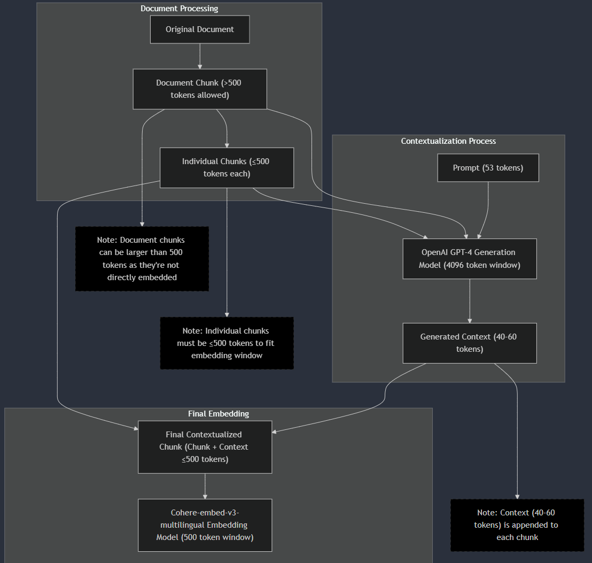
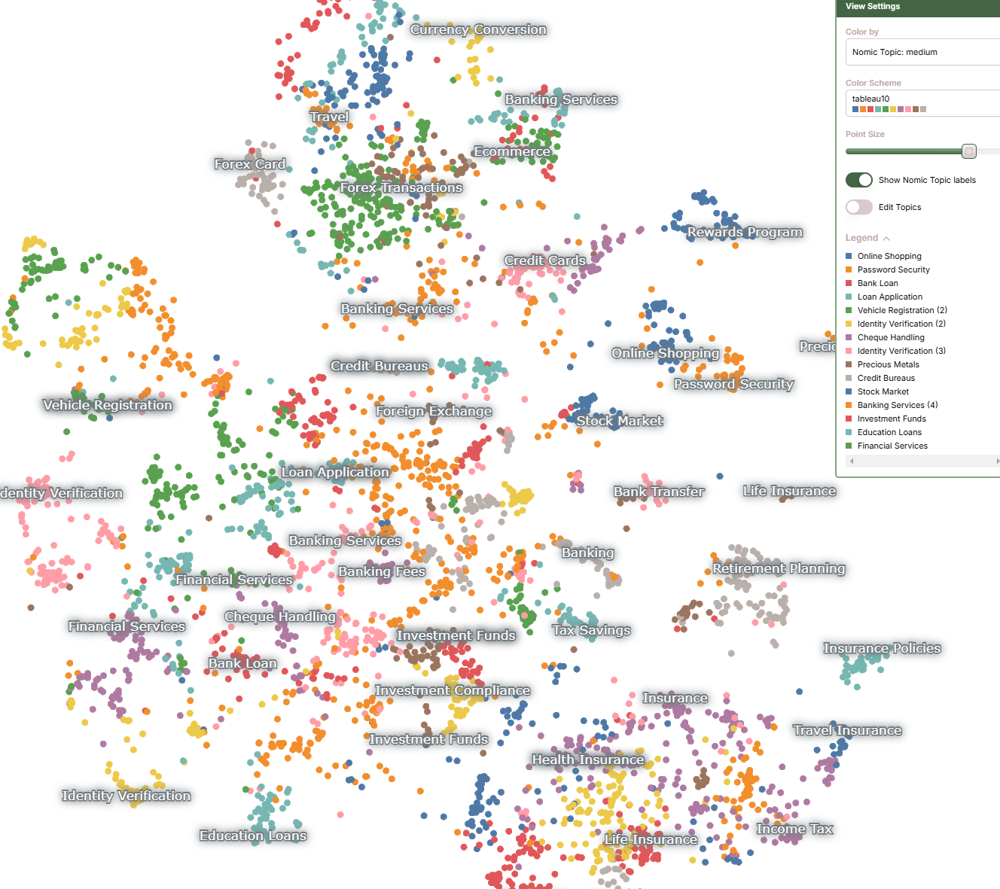

0. Introduction
Evaluating RAG is an unsupervised machine learning problem. Labelling such data manually would be astromical work.
Popular chunking strategies (2024)
- Fixed-size chunking - This is the most common and straightforward approach to chunking. “Contain as much information in each chunk”
- Recursive chunking with overlap - This strategy divides the input text into smaller chunks in a hierarchical and iterative manner using a set of separators. It aims to keep semantically related pieces of text together while maintaining a target chunk size.
- Context-aware chunking - This technique splits documents based on semantic markers such as punctuation, paragraph breaks, or HTML/Markdown tags. Effective for documents with well-defined structures.
There is no one chunking strategy that works for every situation. In this notebook, I’m going compare Fixed-size chunking and Contextual chunking by Anthropic.
0.1 Contextual chunking
- A method that significantly improves the retrieval step in RAG by prepending chunk-specific explanatory context to each chunk before embedding.
- Convincing improvement of 67% when combined with BM25 index and reranking.
- Similar to data augmentation in computer vision. (A cat picture rotated 90 degree is still a cat)
0.2 Fixed-size chunking
- Quick method that randomly chunks at fixed size. Great for assuring the size is within embedding model contextwindow size.
- Cons: chunks may be awkward. For example, a QnA string may be separted into just Question.
1. Experiment design
To test full RAG pipeline with different chunking strategies, I am going to use true/false evaluation.
To briefly summarise the true/false evaluation - Generate ground truth facts on ground truth chunks. RAG will be tested to recognize these truth facts from vector search.
2. Data
To experiment this idea, I am going to use the following data - FAQ_bank.csv has 1764 rows of ‘Question’ and ‘Answer’ string data. For this experiment, ‘category’ was ignored
| FAQ_bank.csv |
*Note: Ground truth chunks will be Question and Answer merged in a nice format. The ground truth chunks will then be appended into a single long string to be chunked.
For example,
- original ground truth chunk - {“Question”:“How do I login?”, “Answer”:“click login button”}
- merged ground truth chunk - “Question: How do I login?: click login button”
- test data in a single string - “Question: q1: a1: q2: a2…”
3. Generate True statements.
Each merged ground truth chunk was input into GTP4o which generated a fact. Some QnA were large enough to generate multiple facts so dynamic number was chosen depending on length of a QnA. For example, if QnA had over 2000 characters, 4 facts were generated, if less than 1000 characters, only one fact was generated.
2865 facts were gnerated from 1764 QnAs.
 |
|---|
Prompt: "From the following context, create "+ str(n) +" many truthful facts in bullet point forms. For example: 1. Telus is a Canadian company.\n2. Toronto is city of Ontraio, Canada.\nContext:".format(context) |
Where n=number of fact to generate, context=QnA in English |
Note that Azure GPT4o was used with temperature=0.1 |
4. Chunking
| Quick overview of chunking flow |
|---|
|  |
4.1 Fixed chunking
Take a large text input (one string) and split it first into documents (based on a maximum document size)
Then splits each document into smaller chunks (based on a maximum chunk size)
Can be configured to respect sentence boundaries (not cutting in the middle of sentences)
Allows for overlap between chunks to maintain context (by keeping some sentences from the previous chunk)
Returns a list of dictionaries, where each dictionary contains:
- A unique document ID
- The full document content
- A unique chunk ID
- The chunk content
Below is python function that achieves this.
Click to show/hide code
import nltk
import uuid
import re
from typing import List, Dict, Optional
from nltk.tokenize import sent_tokenize
def chunk_document(
text: str,
max_doc_size: int = 5000,
max_chunk_size: int = 1000,
overlap_sentences: int = 1,
respect_sentences: bool = True
) -> List[Dict]:
"""
Chunk text into documents and then into smaller chunks with a flattened output structure.
Args:
text: Input text to chunk
max_doc_size: Maximum size of each document in characters
max_chunk_size: Maximum size of each chunk within documents
overlap_sentences: Number of sentences to overlap between chunks
respect_sentences: Whether to avoid splitting in the middle of sentences
Returns:
List of dictionaries, each containing:
- doc_id: Unique identifier for the document
- document: Full document content
- chunk_id: Unique identifier for the chunk
- chunk: The chunk content
"""
# Initialize NLTK if needed
try:
nltk.data.find('tokenizers/punkt')
except LookupError:
nltk.download('punkt')
# Normalize text
text = re.sub(r'\n+', '\n', text)
text = re.sub(r'\s+', ' ', text)
text = text.strip()
# Split into documents
documents = []
if respect_sentences:
sentences = sent_tokenize(text)
current_doc = []
current_length = 0
for sentence in sentences:
sentence_length = len(sentence)
if current_length + sentence_length > max_doc_size and current_doc:
doc_id = str(uuid.uuid4())
doc_content = " ".join(current_doc)
documents.append({
'doc_id': doc_id,
'content': doc_content
})
current_doc = []
current_length = 0
current_doc.append(sentence)
current_length += sentence_length
if current_doc:
doc_id = str(uuid.uuid4())
doc_content = " ".join(current_doc)
documents.append({
'doc_id': doc_id,
'content': doc_content
})
else:
start = 0
while start < len(text):
doc_id = str(uuid.uuid4())
doc_content = text[start:start + max_doc_size]
documents.append({
'doc_id': doc_id,
'content': doc_content
})
start += max_doc_size
# Process each document into chunks and flatten the structure
flattened_chunks = []
for doc in documents:
doc_id = doc['doc_id']
doc_content = doc['content']
sentences = sent_tokenize(doc_content)
current_chunk = []
current_length = 0
chunk_counter = 0
for i in range(len(sentences)):
sentence = sentences[i]
sentence_length = len(sentence)
if current_length + sentence_length > max_chunk_size and current_chunk:
chunk_id = f"{doc_id}_chunk_{chunk_counter}"
chunk_text = " ".join(current_chunk)
flattened_chunks.append({
'doc_id': doc_id,
'document': doc_content,
'chunk_id': chunk_id,
'chunk': chunk_text
})
chunk_counter += 1
current_chunk = current_chunk[-overlap_sentences:] if overlap_sentences > 0 else []
current_length = sum(len(s) for s in current_chunk)
current_chunk.append(sentence)
current_length += sentence_length
# Add remaining chunk if exists
if current_chunk:
chunk_id = f"{doc_id}_chunk_{chunk_counter}"
chunk_text = " ".join(current_chunk)
flattened_chunks.append({
'doc_id': doc_id,
'document': doc_content,
'chunk_id': chunk_id,
'chunk': chunk_text
})
return flattened_chunks
The chunk size chosen for this experiment are as follows:
- maximum document size = 2666
- maximum chunk size = 200, 500, 1000 were tested
- Note: maximum contextwindow size (response) = 4096 for GPT4o. This meant that in generation step of RAG, top k returned chunks sizes plus query size had to be less than 4096.
4.2 Contextual chunking
Take the chunks from fixed chunking.
For each chunk, pass it to GPT4o along with its parent document chunk into following prompt (GPT4o’s output is contextualized text):
Click to show/hide prompt
”
{doc_content} """ Here is the chunk we want to situate within the whole document {chunk_content} Please give a short succinct context to situate this chunk within the overall document for the purposes of improving search retrieval of the chunk. Answer only with the succinct context and nothing else.
- Finally, we merge contextualized text and original chunk text.
Now we have three different contextual texts that were made of max chunk size 200, 500, 1000.
Below is an example of one contextualized text along with its doc_id, chunk_id, chunk and document in json format.
Click to show/hide example
{'doc_id': '341daccf-2455-4ebc-907c-e736bfedcf88','chunk_id': '341daccf-2455-4ebc-907c-e736bfedcf88_chunk_0','contextualized_content': 'This chunk provides instructions on entering card details during a secure IVR transaction, the necessary details required, how to obtain an IVR password, and the process for registering a mobile number for IVR password requests.',
'chunk': "Do I need to enter ‘#’ after keying in my Card number/ Card expiry date/ CVV numberPlease listen to the recorded message and follow the instructions while entering your card details. What details are required when I want to perform a secure IVR transactionTo perform a secure IVR transaction, you will need your 16-digit Card number, Card expiry date, CVV number, mobile number and IVR password. How should I get the IVR Password if I hold an add-on cardAn IVR password can be requested only from the registered mobile number and will be sent to the registered mobile number / email ID of the primary card holder only. How do I register my Mobile number for IVR Password Please call our Customer Service Centre and ensure that your mobile number is updated in our records. How can I obtain an IVR Password By Sending SMS request: Send an SMS 'PWD1234' to 9717465555 or to 5676712 from your registered (with Bank) mobile number.",'document': "Do I need to enter ‘#’ after keying in my Card number/ Card expiry date/ CVV numberPlease listen to the recorded message and follow the instructions while entering your card details. What details are required when I want to perform a secure IVR transactionTo perform a secure IVR transaction, you will need your 16-digit Card number, Card expiry date, CVV number, mobile number and IVR password. How should I get the IVR Password if I hold an add-on cardAn IVR password can be requested only from the registered mobile number and will be sent to the registered mobile number / email ID of the primary card holder only. How do I register my Mobile number for IVR Password Please call our Customer Service Centre and ensure that your mobile number is updated in our records. How can I obtain an IVR Password By Sending SMS request: Send an SMS 'PWD1234' to 9717465555 or to 5676712 from your registered (with Bank) mobile number. (Note: 1234 are the last 4 digits of your HDFC Bank Credit Card number). You will receive an SMS with the IVR password on the same number. From HDFC Bank Website: If you have registered your card for NetSafe/ Verified by Visa/ MasterCard SecureCode, you can also login in to your NetSafe/ Verified by Visa/ MasterCard SecureCode account and use the Generate IVR Password option available on the left menu. The IVR password will be sent to your registered mobile number and email ID. These are the most convenient and recommended options. To ensure convenience, make a note of the IVR password and keep it handy while performing the transaction. Note: Kindly ensure that your latest mobile number and email ID is updated with us. Premium SMS charges as per your mobile service provider will apply for an SMS sent to 5676712 View more Can I use the same IVR Password to perform multiple transactionsNo, each IVR password can be used only for a maximum of 3 attempts (including decline attempts) within the specified validity period. For further transaction attempts, a new IVR password must be generated. Can I generate multiple IVR PasswordsNo, only one IVR password can be generated at a time. Only when the first one is used / expires, can the next IVR password be generated. How do I register for IVR passwordThere is no registration process. However you will have to obtain a 3D Secure IVR password to perform a secure IVR transaction by sending an SMS prior to the transaction or through NetSafe/ Verified by Visa/ MasterCard SecureCode login account (as mentioned above)."}
4. Generate embeddings.
Here, we embed 6 different embeddings.Theoretically, the bigger the chunk size, more information is contained in the chunk. But smaller chunk may be more precise when retrieving specific information.
- Chunk size 200
- Chunk size 500
- Chunk size 1000
- Chunk size 200 with contextualization
- Chunk size 500 with contextualization
- Chunk size 1000 with contextualization
Embeddings doesn’t mean anything to human, but we can use visualisations and clustering in particular to turn embeddings into something useful for human.
Consider the following 2D vector space of “chunk size 200 with contextualization” embeddings. Click to open interative map

For example, observe that there are multiple types of insurance clusters both big and small (Health, travel, life, etc insurances) and they are separated apart by distance from banking services cluster groups.
To understand simply, this embedding model read, understood the English chunks and then translated into their own ‘machine language’. Note that the actual vectors are dimensions of 1024 so actual vector space would be too complex for us to understand.
3.4 Vector Store
Here, we use faiss vector database to store raw text and its embedding. Faiss vector db supports k-means clustering, proximity graph-based methods and most importantly similarity search for our RAG.
Note: for this experiment, cosine similarity was used to calculate closest vector to test queries.
There are tons of other vector databases available such as Redis, Pinecone, Postgresql, etc. Therefore, TODO
4. Evaluation
Following prompt was used to evaluate RAG. Using Azure GPT4o with temperature=0
prompt = f"""
Is the following statement true?
Statement: ```{query}```
Answer only in True or False. Do not explain.
Use the following ground truth documents of Questions and Answers.
Documents:
```
{combined_context}
```
"""Where query = generated facts from step 3.2 in English and combined_context=returned documents from vector similarity search.
4.1 Evaluate with top 3 returns.
Note: Ground truth label is all True.
| Chunking strategy | Accuracy | Fail | True | False |
|---|---|---|---|---|
| chunk max length 500 + top 3 return | 92.15% | 40 | 2596 | 221 |
| chunk max length 500 + top 3 return + contextual | 91.95% | 48 | 2583 | 226 |
| chunk max length 1000 + top 3 return | 88.37% | 54 | 2477 | 326 |
| chunk max length 1000 + top 3 return + contextual | 88.11% | 56 | 2468 | 333 |
| chunk max length 200 + top 3 return | 91.73% | 38 | 2586 | 233 |
| chunk max length 200 + top 3 return + contextual | 92.56% | 34 | 2613 | 210 |
| chunk max length 200 + top 10 return + contextual | 95.16% | 70 | 2652 | 135 |
5. Summary
- Chunks with max length 200 plus contextual strategy got the highest accuracy.
- Additionally, retrieving top 10 in vector search instead of top 3 improved the accuracy significantly by 2.6%.
- Most interesting is that for chunk max length 500 and 1000, contextual strategy actually decreased the accuracy. One reason may be because the contextual + chunk may have gotten too big for accurate and precise retrieval.
Failcolumn is llm fails due to token size exceeding GPT4o’s contextwindow size of 4096. Notice that the longer the chunk and more top k returned, more failed llm calls.
5.1 Limitation
- Running this evaluation is costly because it requires new embedding calls for new chunks and each chunk need a contextual call separately.
- Therefore, although we can try other chunk max size such as 100, 150, 199, 201, etc, finding most optimized chunk length is going to be heavy.
- To address failed query we can do the following, 1. Use llm with bigger context window size 2. Chunk smaller 3. return less top k
6. Next steps
- Multimodal embedding (image, videos, pdfs, etc)
- Vector store comparison (Latency, semancitc caching)